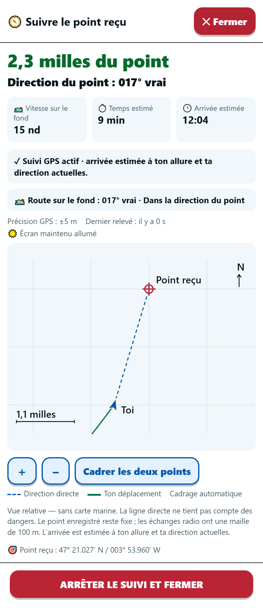

Toute la flotte entend.
Seul votre groupe comprend.
Les oiseaux plongent, les thons sont là. Vos équipiers cherchent quelques milles plus loin.
Plus de réseau… et tout le monde sur l’eau peut écouter la VHF.
VHF GPS Code permet de partager un point GPS avec une simple phrase codée, sans dicter « 46° 12,347′ N / 003° 14,682′ W » à la radio.
📣 Une phrase amusante.
Un échange vérifié. Un point gardé secret.
- VOUS · LA PHRASE CODÉETHON MYSTIQUE ET ALBATROS ALTRUISTE
- VOTRE ÉQUIPIER · LE MOT DE RETOURBISCUIT
- VOUS · LA CONFIRMATION FINALECLARINETTE
✓ Votre équipier a le point confirmé et peut lire les coordonnées GPS.
Les autres ont entendu… un thon mystique, un biscuit et une histoire de clarinette. 😄
Sans le secret unique de la sortie, votre point GPS reste codé. Les mots entendus ne révèlent pas vos coordonnées.
Exemple illustratif. Les mots dépendent du point et de votre sortie.
⏱️ Avec un peu d’habitude, un échange complet peut tenir en moins de 30 secondes.
Le point reçu… cap sur les équipiers 🧭
Retrouvez les coordonnées marines, la distance et la direction vers le point. Ouvrez le suivi GPS pour voir votre progression et, lorsque les mesures le permettent, le temps restant et l’heure d’arrivée estimée.
Le journal de la sortie rassemble les points générés et reçus. Vous pouvez reprendre le suivi d’un point précédent pour y retourner.

Capture de l’application — trajet de démonstration.
Moins de chiffres. Plus de pêche. 🎣
🔐Le point reste dans le groupe
Pas de compte, pas d’inscription. L’application code vos positions sur votre téléphone.
Vos coins de pêche restent sur votre téléphone : aucun n’est collecté sur un serveur.
📣Quatre mots + ET ou OU
Une phrase courte plutôt que des degrés, minutes et décimales. Un chiffre mal compris peut envoyer un bateau à plusieurs milles du point.
🤝Mieux qu’un simple « reçu »
« Reçu » ne dit pas quelle position votre équipier a comprise. Son mot de retour doit correspondre au vôtre ; vous annoncez alors la confirmation finale.
🌊Au large, sans Internet
Préparez votre sortie ou installez l’invitation dans l’application au port, avec du réseau. Ensuite, tout fonctionne au large, sans Internet.
Avant le départ, préparez ensemble 🚤
- Un bateau prépare une nouvelle sortie et choisit la zone de pêche pour le groupe. Il partage l’invitation au groupe par messagerie.
- Les équipiers installent l’invitation dans l’application. De préférence avant le départ, avec Internet. Chacun vérifie le résumé et confirme.
- Sur l’eau : générez, annoncez, confirmez. Prenez la position du téléphone ou recopiez celle du GPS ou du traceur du bateau. En flottille, un interlocuteur répond à la fois.
🔄 Une nouvelle clé à chaque sortie. Préparez une nouvelle sortie à chaque départ : les phrases et les mots de contrôle sont recalculés avec un nouveau secret pour tout le groupe. Le secret d’hier ne permet pas de décoder les échanges du jour.
Quelques questions avant d’embarquer
Touchez une question pour afficher la réponse.
💚 C’est gratuit ?
Oui, VHF GPS Code est gratuite pour le moment, sans compte ni inscription. Son code source est public et consultable.
Un lien de contribution volontaire sera mis en place pour aider le développement. Vous pourrez soutenir le projet si vous le souhaitez.
🔐 Qui peut décoder ? Est-ce un vrai code ?
Pour décoder vos points GPS, il faut le secret unique de votre sortie, contenu dans l’invitation. Connaître l’application ou sa liste de mots ne suffit pas.
Ce n’est pas une liste de mots associés à des lieux fixes : leur correspondance avec les positions est calculée à partir du secret et change à chaque nouvelle sortie.
Comme dans les films d’espionnage, votre groupe partage un secret pour ses transmissions radio. De quoi se prendre pour James Bond… avec permis de pêcher. 🎣
Gardez l’invitation entre les participants : elle donne accès aux points échangés pendant la sortie.
🚤 Et si un autre groupe utilise aussi l’application ?
Avec l’invitation d’une autre sortie, il dispose d’un autre secret. Il peut entendre vos mots à la VHF, mais ils ne lui donnent pas votre point. Pour échanger vos positions entre équipiers, installez la même sortie.
📝 Vous avez déjà votre code maison ?
« À la poissonnerie », « Au jardin », un décalage de coordonnées… Vous avez déjà trouvé une façon de partager vos coins discrètement. VHF GPS Code reprend cette idée, avec un code renouvelé à chaque sortie et un échange vérifié.
- Un nouveau secret à chaque sortie. Des noms de spots ou des décalages réutilisés peuvent finir par être compris par ceux qui écoutent. Avec une nouvelle sortie, la correspondance entre les mots et les positions change.
- Un nouveau point, même sans repère convenu. Vous n’êtes pas limité à une liste de lieux connus : transmettez le point d’une chasse au thon ou une position choisie dans la zone de votre sortie.
- Moins de calculs et de recopie. Le GPS du téléphone peut remplir la position. L’application fournit la phrase et retrouve les coordonnées à la réception : pas de règle de décalage ni de calcul mental, peu pratiques et sources d’erreurs.
Gardez vos habitudes de pêche : l’application s’occupe du code et de ses contrôles. 🎣
📻 Quel intérêt si ma VHF possède déjà l’ASN / DSC ?
Certaines VHF ASN / DSC permettent déjà de demander et recevoir une position directement par radio, sans échange vocal. Pour une flottille, l’ASN peut demander davantage de préparation : fonctions compatibles et MMSI à enregistrer sur les radios.
Un échange numérique ciblé ne signifie pas un échange secret : les positions ASN classiques ne sont pas chiffrées.
VHF GPS Code fonctionne aussi avec une VHF sans ASN. Vous partagez une invitation aux équipiers : vos points sont ensuite codés avec le secret unique de votre sortie. Vous pouvez transmettre votre position ou un autre point choisi, puis le retrouver dans le journal et lancer le suivi sur le téléphone.
L’application complète votre VHF uniquement pour la pêche ; elle ne remplace pas ses fonctions de détresse.
🤓 Pourquoi quatre mots, puis deux mots de contrôle ?
Quatre mots pour plus de six millions de points possibles. Une zone de 250 × 250 km, découpée en cases de 100 m, représente 6,25 millions de positions. La phrase permet de coder le point avec votre secret et d’inclure un contrôle du message. ET ou OU fait aussi partie du code.
Deux mots pour vérifier qu’on s’est compris. Le mot de retour dépend du point décodé par votre équipier. S’il correspond à celui attendu, vous annoncez la confirmation finale : votre équipier peut alors valider et afficher la position.
Une phrase courte pour transmettre. Un aller-retour pour confirmer. Chaque étape a son rôle.
👂 Et si un mot est mal entendu ?
Le protocole est conçu pour repérer les erreurs de saisie et de réception à la radio. L’application contrôle la phrase et vous aide à demander une répétition : un mot manquant, ou toute la phrase si elle n’est pas validée.
Le mot de retour puis la confirmation finale servent à vérifier que votre équipier a décodé le même point que vous. Annoncez la confirmation finale seulement si le mot de retour correspond exactement.
La position n’est confirmée qu’après les contrôles et l’échange radio complet. C’est ce qui rend le partage plus fiable qu’un simple « reçu ».
📶 Faut-il du réseau en mer ?
Non. Installez l’invitation dans l’application au port, avec du réseau ; ensuite, les échanges fonctionnent au large sans Internet.
Vous pouvez aussi recevoir ou réinstaller une invitation sans réseau, si la version prévue pour cette sortie est déjà téléchargée sur le téléphone.
📍 Quelle précision ? La chasse est-elle suivie ?
La position est représentée sur une grille de 100 m. Sa qualité dépend aussi du GPS ou des coordonnées saisies. Le point transmis reste fixe : si la chasse se déplace, envoyez une nouvelle position.
🛰️ Le GPS du téléphone est-il obligatoire ?
Non. Vous pouvez recopier la position du GPS ou du traceur du bateau. Le GPS du téléphone simplifie et accélère la procédure : un appui suffit pour récupérer votre position, sans recopier les coordonnées. Il permet aussi de calculer automatiquement la distance et la direction vers le point, puis de suivre votre progression.
🗺️ Est-ce une carte marine ?
Le suivi montre votre déplacement vers un point, sans carte des fonds ni obstacles. Utilisez votre traceur et les informations de navigation pour choisir votre route.
📱 Et sur iPhone ou Android ?
L’application s’installe sur les deux. Utilisez le bouton d’installation de l’accueil : il propose l’installation sur Android ou les étapes dans Safari sur iPhone.
⚖️ Et côté réglementation, c’est autorisé ?
L’usage d’un langage convenu sur les canaux navire-navire 6, 8, 72 et 77 a été confirmé au créateur de l’application par l’ANFR.
Vous pourriez même parler une autre langue entre équipiers… mais « THON MYSTIQUE » sera sans doute plus simple pour tout le monde ! 😄
L’utilisation reste soumise à la réglementation en vigueur pour les communications VHF maritimes.
⚠️ En cas de détresse, annoncez toujours votre position en clair. Les échanges codés se font sur les voies 6, 8, 72 ou 77, jamais sur le 16.
Installez l’application et essayez à terre : deux téléphones suffisent ! 📱📱
Pas besoin d’attendre d’être sur l’eau : entraînez-vous à transmettre et recevoir un point, côte à côte ou en vous appelant. Quelques essais pour prendre le geste avant de partir… et l’échange devient simple en mer.
Puis embarquez votre flottille. 🎣